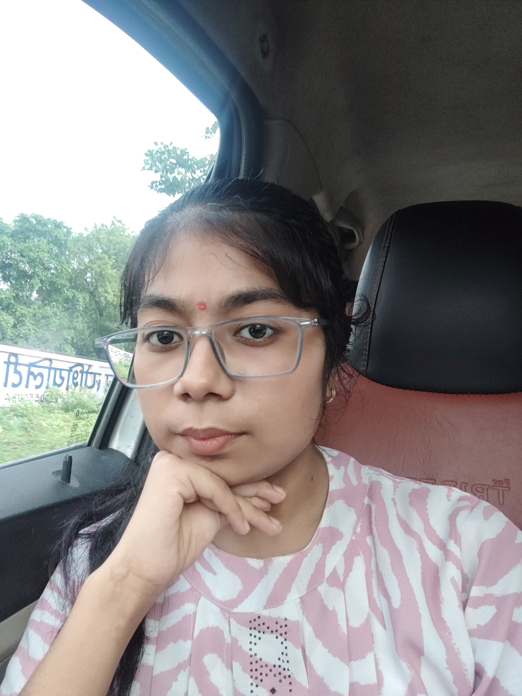

ABOUT ME

Hi! I'm Sejal Gupta, a passionate
and curious developer with a strong foundation
in programming and web development. I'm currently a student pursuing
Btech in material science and engineering from IIT Kanpur.
I enjoy building clean, responsive web applications and exploring full-stack development with technologies like React, Express, and FastAPI. I also love problem-solving and spend time practicing data structures and algorithms in Java.
Right now, I’m expanding my skills in the MERN stack and working on personal projects to strengthen my backend skills using FastAPI and MongoDB.
My goal is to contribute to impactful projects, land a software development internship, and keep growing as a developer by learning from real-world experiences and the tech community.
When I’m not coding, I enjoy sketching, listening to music, and reading about space and science fiction. I believe in continuous learning and love collaborating with others to build cool things.